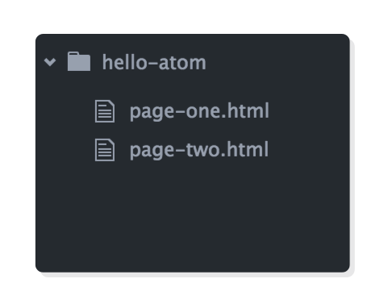

УРОК Nº 1.
Самый простой и понятный учебный курс веб-разработки
Признаться, я ни за что бы не начал изучать учебник который называется "HTML & CSS Is Hard". Но этот учебник в своем блоге порекомендовал Дерек Сиверс, один из удивительнейших известных мне людей.
Я перечитал его на английском дважды. Читая в первый раз, я почти ничего не знал об Html&CSS. Тем не менее я быстро смог разобраться в базовых положениях. Проскочив несколько глав я прочитал как сделать адаптивный дизайн для смартфонов. Я тут же попробовал и... у меня получилось!!!
Читая далее, с каждым разом я понимал все больше. Восхищала краткость и ясность подачи материала. Именно из-за этой ясности, легкодоступности, ну и из-за краткости тоже, я решил перевести этот учебник на русский язык. В процессе перевода я рассчитывал продвинуться на более глубокий уровень понимания языка разметки и стилей.
Надеюсь, что читателю тоже понравится и пригодится этот учебник.
Перевод сделан близко к тексту, но дословным переводом его назвать конечно
же нельзя.
Предполагаю, что какой-никакой базовый английский у вас все-таки есть...
а как иначе?
Если ваш английский все-таки "хромает", одна из самых лучших лично мне известных методик изучения иностранных языков - speakasap.ru Елены Шипиловой. Может вам начать с бесплатного курса Английский за 7 уроков
В некоторых местах текста я сделал "примечания переводчика" для русскоязычного читателя. Чтобы выделить отделить их от оригинального текста, примечания переводчика [заключены в квадратные скобки] или выделены знаком "*" как сноски.
Если читатель обнаружит ошибки в терминологии, да и вообще любые опечатки или логические нестыковки, прошу сообщить об этом мне по мейлу sla@yarve.com.
Изучать HTML&CSS нелегко? Нет, это стереотип. Данный учебник, состоящий из 14 глав, является одним из самых легкопонятных руководств по HTML и CSS в Интернете. В нем рассказано обо всем, начиная с выбора хорошего текстового редактора (что на удивление важно) и заканчивая созданием полноценных веб-страниц профессионального качества. И все это "с нуля".
Данный курс задуман как учебник HTML и CSS, включающий ВСЁ, что необходимо знать на эту тему. Если вы приложите усилия для изучения каждого урока, собственноручно напишите все приведенные фрагменты кода, то этот учебник заменит вам онлайн-курсы и тренинги стоимостью в сотни и даже тысячи долларов.
Главная цель данного учебника - максимально упростить ваше превращение из новичка в профессионала веб-разработки. Если вы никогда не писали кода, но подумываете о смене профессии, сварите себе чашечку кофе и присаживайтесь поудобнее. Мы начинаем.
Язык гипертекстовой разметки (HTML), каскадные таблицы стилей (CSS) и JavaScript - это языки, на которых работает Интернет. Они очень тесно связаны между собой, но при этом предназначены для решения совершенно разных задач. Понимание их взаимодействия между собой, поможет вам стать веб-разработчиком. Мы будем раскрывать эту тему на протяжении всего курса, но суть ее такова:
Другими словами, HTML это абстрактный текст и изображения, лежащие в основе
веб-страницы.
CSS это отображение страницы на экране.
JavaScript это элементы поведения, которые могут управлять как HTML, так и CSS.
* - content означает содержимое. Переводы других терминов ЗДЕСЬ.

Например, с помощью этого HTML можно выделить определенный фрагмент текста как абзац:
<p id='some-paragraph'>Здесь помещается содержимое абзаца.</p>
Затем с помощью CSS можно задать размер и цвет этого абзаца:
p {
font-size: 20px;
color: blue;
}
И если вы вошли во вкус, с помощью JavaScript можно сделать так, что после щелчка мышью, текст полностью поменяется! Первоначальный текст: "Здесь помещается содержимое абзаца" после щелчка мышью поменяется на 'Текст который "щелкнули"' (однако язык JavaScript мы оставим для будущих учебников.)
var p = document.getElementById('some-paragraph');
p.addEventListener('click', function(event) {
p.innerHTML = 'Текст который щелкнули.';
});
Как видите, HTML, CSS и JavaScript - это совершенно разные языки, но все они так или иначе связаны друг с другом. Большинство веб-сайтов используют все три языка, но внешний вид каждого сайта определяется HTML и CSS. Это делает данный учебник отличной отправной точкой в вашем путешествии по веб-разработке.
К сожалению, владение HTML, CSS и JavaScript - это лишь необходимое условие для того, чтобы стать профессиональным веб-разработчиком. Существует целый ряд других практических навыков, необходимых для работы с сайтом:
Для решения этих довольно сложных задач необходимо настроить различные "среды" [environments] для организации файлов и сборки/развертывания сайта. Это не связано с кодом HTML, CSS и JavaScript, из которого состоит сайт. Данные процессы выходят за рамки нашего курса. Основное внимание уделяется языкам HTML и CSS, а не настройке этих "сред".

Однако сейчас нет необходимости забивать голову этими процессами. Сейчас ваша цель - свободное владение HTML и CSS. Это важный первый шаг к тому, чтобы стать настоящим веб-разработчиком. Нам не хотелось бы создать иллюзию, что после изучения этого учебника вы сходу сможете самостоятельно создать полноценный сайт. Однако у вас будут навыки, позволяющие воссоздать подавляющее большинство сайтов в Интернете.
Итак, что же нужно для того, чтобы "выучить" HTML и CSS? Давайте посмотрим через призму истории полиграфии. Еще во времена первых печатных станков печатники создавали документы, располагая металлические бруски (типографские литеры), обмакивая их в краску и делая оттиск на лист бумаги.
Почти то же самое делают сегодня веб-разработчики. Только вместо расставления типографских литер, они пишут HTML и CSS. Происходит тот же процесс, что и ранее: передача содержания в осмысленном виде. Даже задачи остаются те же: выбор шрифта, установка размера заголовков, определение расстояния между строками текста.

Раньше в типографии печаталась пачка страниц и скреплялась в книгу. Сегодня мы создаем множество HTML-файлов и соединяем их в веб-сайт. Изучение HTML и CSS сводится к пониманию доступной разметки HTML и правил CSS, позволяющих браузеру отображать эти файлы так, как задумано.
Существует множество фреймворков для разработки сайтов ( Bootstrap, ZURB foundation, Pure CSS и др.). Цель каждого из них - абстрагироваться от излишеств, связанных с созданием веб-страниц с нуля. Подобные фреймворки являются важной частью реальной веб-разработки, и их обязательно стоит изучить, но только после того, как вы освоите основы HTML и CSS.
Данный учебник посвящен основам HTML и CSS. Вы сможете создать практически все, что может понадобиться вам как веб-разработчику, используя только HTML и CSS. Это знание останется с вами навсегда, несмотря на новые блестящие дополнения к стандартам HTML и CSS или новомодные фреймворки, помогающие работать быстрее.
Данный учебник - это обучение основанное на практике. За исключением того, что вы уже прочитали, весь этот учебник выстроен на конкретных примерах, попутно объясняя концептуальные аспекты HTML и CSS.
Чтобы получить максимальную пользу от этого курса, необходимо активно создавать веб-страницы и выполнять все шаги каждой главы. Если вы всерьез намерены стать веб-разработчиком, то вам следует набирать каждый фрагмент кода "ручками", а не копипастить Сtrl+V.
Почему? Потому что именно это вы будете делать в качестве настоящего веб-разработчика. "Ручной" ввод примеров кода способствует развитию моторной памяти, которая пригодится вам в реальной работе по разметке контента для реальных сайтов.
Для этого курса достаточно иметь удобный текстовый редактор и веб-браузер. Основная работа заключается в том, чтобы написать код в текстовом редакторе, а затем открыть его в браузере и посмотреть, как он выглядит. По мере создания собственных сайтов вы будете добавлять в свой инструментарий все новые и новые инструменты, но важно начать с минимума и досконально изучить основы HTML и CSS.

Не пожалейте времени на то, чтобы освоить работу с текстовым редактором. Хорошие редакторы оснащены функциями (автозавершение тегов, переход по тексту, навигация по файловой системе и т.п.), позволяющими писать код быстрее обычного. Мастерское владение текстовым редактором это часть изучения HTML и CSS.
Единственным и самым важным требованием для хорошего браузера является его актуальность и широкое распространение. Chrome и Firefox - фавориты среди веб-разработчиков. Safari тоже подойдет, если вы работаете в OS X. Настоятельно рекомендуем при создании сайтов отказаться от Internet Explorer. Для профессиональной веб-разработки часто требуется эффективный способ тестирования кода на всех этих браузерах. Но изучением темы тестирования кода займемся в другой раз. Сейчас в этом нет критической необходимости.
Мы рекомендуем текстовый редактор Atom. Он удобен даже для начинающих пользователей, обладает всеми полезными функциями, о которых мы говорили выше, и доступен для всех основных операционных систем. Кроме того, его можно бесконечно настраивать, что будет важно по мере выявления повторяющихся задач, которые можно автоматизировать.
Если у вас еще нет Atom, загрузите его прямо сейчас, поскольку он понадобится вам на следующем уроке. После загрузки откройте его, чтобы мы могли вкратце ознакомиться с его основными возможностями. Вы должны увидеть две панели с различными окнами приветствия:
Оба эти экрана приветствия нам не нужны.
Закройте их, щелкнув на значок X в соответствующих вкладках.
Для их закрытия можно также воспользоваться сочетанием клавиш Cmd+W (Mac)
или Ctrl+W (Windows/Linux)
(сочетания клавиш - отличная вещь, пользуйтесь ими при любой возможности).
У вас должна остаться одна вкладка без названия.
Каждый сайт, над которым вы работаете в Atom, представляет собой "проект". По сути, это просто папка в вашей файловой системе, содержащая HTML- и CSS-файлы. Давайте познакомимся с Atom, создав фиктивный проект и добавив в него несколько текстовых файлов. Нажмите File > Open в строке меню, чтобы открыть диалоговое окно файла, затем создайте новую папку, выбрав New Folder. Назовите ее hello-atom и щелкните Open.
В левой части интерфейса должна появиться боковая панель с надписью hello-atom вверху рядом с маленьким значком папки. Это и есть наш файловый браузер. Конечно, он ничего не покажет, пока мы не добавим туда файлы, так что давайте это и сделаем.
Добавьте на вкладку без названия произвольный текст. Сохраните изменения нажав Cmd+S (Mac) или Ctrl+S (Windows, Linux). Назовите файл page-one.html. После этого вы должны увидеть его в браузере файлов Atom.
Создадим еще один файл, нажав Cmd+N (Mac) или Ctrl+N (Windows, Linux). Это создаст еще одну вкладку без названия. Как и в предыдущем файле, добавьте любой текст и сохраните его под именем page-two.html.
Один из важнейших аспектов полноценного редактора - удобная навигация по всем файлам проекта. В Atom вы можете выбрать вкладку файла, с которым хотите работать, или найти его в браузере файлов в левой части интерфейса. Переходить по открытым вкладками можно также с помощью Ctrl+Tab.
Все это хорошо и удобно для просмотра файлов, но зачастую возникает необходимость поиска конкретного файла. Например, во время проверки работоспособности, вы обнаружили неработающую ссылку на своем сайте. Вы хотели бы с помощью Atom мгновенно "прыгнуть" в этот файл, чтобы быстро исправить сломанную ссылку?
Вам поможет так называемый Atom’s fuzzy finder. Это строка поиска, вызваемая комбинацией Cmd+T (Mac) или Ctrl+T (Windows, Linux). Эта комбинация клавиш открывает строку поиска и позволяет ввод имени (или части имени) искомого файла. Попробуйте закрыть обе вкладки, нажать Cmd+T или Ctrl+T и ввести "one". На экране появится файл page-one.html, и вы сможете нажать Enter для редактирования этого файла. Данная опция бесценна, когда проект разрастается до десятков файлов в разных папках.
Atom позволяет иметь не только несколько вкладок, но и несколько панелей. Чтобы понять, о чем идет речь, щелкните правой кнопкой мыши на один из файлов в браузере файлов и выберите команду Split Right. Файл откроется в новой панели, что позволит просматривать несколько файлов одновременно.

Дополнительные панели очень удобны для одновременного просмотра CSS-файла и связанного с ним HTML-файла.
Иногда требуется работать с файлами "за пределами" редактора Atom (например, для добавления картинки на наш сайт). Для этого воспользуйтесь встроенным файловым браузером. Щелкните правой кнопкой мыши на файл в браузере файлов Atom и выберите Show in Finder/File Manager/Explorer ... Это позволит открыть данный файл в Проводнике или в другом файловом браузере, открывающимся в вашем компьютере по умолчанию.
Отсюда вы можете добавлять новые файлы, создавать папки или открывать HTML-файлы в веб-браузере. Это станет обычной процедурой до конца всего курса, поэтому давайте попробуем это сделать с файлом page-one.html. Щелкните его правой кнопкой мыши в стандартном файловом браузере вашей системы и выберите Open With > Chrome/Firefox/Safari. Текст в файле, должен отобразиться в виде веб-страницы в вашем стандартном веб-браузере.

Теперь можно редактировать страницу page-one.html в Atom, сохранять изменения и просматривать в браузере. Для обновления окна браузера нажмите Cmd+R (Mac) или Ctrl+R (Windows, Linux). Это и есть базовый процесс редактирования для всех веб-разработчиков, и вы очень быстро привыкнете к нему задолго до конца изучения последующих 13 уроков.
Поздравляем! Вы сделали первый шаг к тому, чтобы стать профессиональным веб-разработчиком. Надеемся, что эта глава дала вам базовое понимание того, как HTML и CSS используются в сфере веб-разработки, а также общей философии нашего учебника.
Все вышесказанное об Atom станет частью нашей повседневной работы. Поэтому прежде чем двигаться дальше, убедитесь, что вам все понятно. Мы рекомендуем немного поиграть с нашим фиктивным проектом, добавляя новые файлы и тренируясь в переходах от одного файла к другому. Овладение навыками написания HTML и CSS - это то, что отличает невероятно продуктивных разработчиков от обычных.
Теперь, когда у нас есть полноценный текстовый редактор, мы готовы приступить к созданию полноценных веб-страниц. В следующих двух главах мы начнем с изучения наиболее распространенных элементов HTML, а затем добавим к ним CSS.